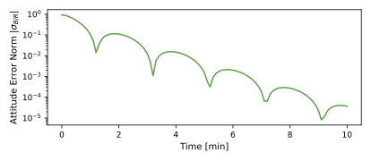
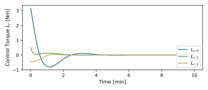

scenarioAttitudeGuidance
Overview
Discusses how to use guidance modules to align the spacecraft frame to the orbit or Hill frame. This script sets up a 6-DOF spacecraft which is orbiting the Earth.
The script is found in the folder basilisk/examples and executed by using:
python3 scenarioAttitudeGuidance.py
The simulation layout is shown in the following illustration. A single simulation process is created which contains both the spacecraft simulation modules, as well as the Flight Software (FSW) algorithm modules.

When the simulation completes 4 plots are shown for the MRP attitude history, the rate tracking errors, the control torque vector, as well as the projection of the body-frame B axes \(\hat b_1\), \(\hat b_2\) and \(\hat b_3\) onto the respect Hill or Orbit frame axes \(\hat\imath_r\), \(\hat\imath_{\theta}\) and \(\hat\imath_h\). This latter plot illustrates how the body is being aligned with respect to this Hill frame.
The basic simulation setup is the same as the one used in scenarioAttitudeFeedback. The dynamics simulation is setup using a Module: spacecraft module to which a gravity effector is attached. Note that both the rotational and translational degrees of freedom of the spacecraft hub are turned on here to get a 6-DOF simulation. For more information on how to setup orbit, see scenarioBasicOrbit.
In contrast to the simple inertial pointing guidance example scenarioAttitudeFeedback,
this module also requires the
spacecraft’s position and velocity information. The planet ephemeris message relative to which the Hill pointing
is being achieved by connecting the celBodyInMsg message.
This is useful, for example, if orbiting the sun, and wanting to point the spacecraft back at the
Earth which is also orbiting the sun.
Note that if the celestial body ephemeris input message is not connected then
a zero message is created which corresponds to the planet having a zero position and velocity vector.
If non-zero ephemeris information is required then the input name must point
to a message of type EphemerisMsgPayload.
In this scenario, however, the spacecraft is to point at the Earth while already orbiting the Earth and the input
message name is set to a dummy message.
Illustration of Simulation Results
show_plots = True, useAltBodyFrame = False
The default scenario shown has the useAltBodyFrame flag turned off. This means that we seek
to align the body frame B with the Hill reference frame \(\cal R\). The
resulting attitude and control torque histories are shown below. Note that the projections
of the body frame axes onto the Hill frame axes all converge to +1, indicating that \(\cal B\) becomes
asymptotically aligned with \(\cal R\) as desired.
show_plots = True, useAltBodyFrame = True
Here the control should not align the principal body frame B with R, but rather an alternate, corrected body frame \({\cal B}_c\). For example, consider the Earth observing sensors to be mounted pointing in the positive \(\hat b_1\) direction. In earlier scenario this sensor platform is actually pointing away from the Earth. Thus, we define the corrected body frame orientation as a 180 deg rotation about \(\hat b_2\). This flips the orientation of the final first and third body axis. This is achieved through:
attError.sigma_R0R = [0,1,0]
The DCM \([R_0R]\) is the same as the body to corrected body DCM \([B_cB]\). The resulting attitude and control torque histories are shown below. Note that the projections of the 2nd body frame axis onto the 2nd Hill frame axes converges to +1, while the other projections converge to -1. This indicates that the desired asymptotic Earth observing attitude is achieved.
 
- scenarioAttitudeGuidance.plot_attitude_error(timeLineSet, dataSigmaBR)[source]
Plot the attitude result.
- scenarioAttitudeGuidance.plot_control_torque(timeLineSet, dataLr)[source]
Plot the control torque response.
- scenarioAttitudeGuidance.plot_orientation(timeLineSet, dataPos, dataVel, dataSigmaBN)[source]
Plot the spacecraft orientation.
- scenarioAttitudeGuidance.plot_rate_error(timeLineSet, dataOmegaBR)[source]
Plot the body angular velocity tracking error.
- scenarioAttitudeGuidance.run(show_plots, useAltBodyFrame)[source]
The scenarios can be run with the followings setups parameters:
- Parameters:
show_plots (bool) – Determines if the script should display plots
useAltBodyFrame (bool) – Specify if the alternate body frame should be aligned with Hill frame.